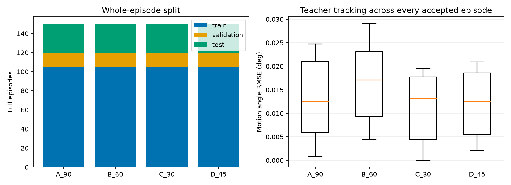

Generated 600 complete accepted OpenSim teacher episodes. All data stay inside this timestamped folder. No neural network has been trained yet.
Tasks: A_90 vertical reaches (90% muscle strength), B_60 variable speeds/reversals (60%), C_30 cross-body motion (30%), D_45 reach/hold with known load pulses (45%). Fixed 5 kg dumbbell, 0.005 s control samples, muscle excitation 0.1. Whole parent episodes are split before fitting: default 420 train,60 validation,120 test. Four instantaneous copied-state teacher queries every 0.2 s add recovery examples, not integrated episodes. Startup combinations may recur across episode splits; this is not a claim that all initial states are unseen. OpenSim dynamics uses CPU workers and no viewer; CUDA is for the later NN optimization. The 28-feature arrays, force labels, time stamps, settings, compact signals and hashes are retained. Test data may be audited for teacher quality here, but the NN trainer locks test decoding until all models and validation-only selection are frozen.
| Task | Split | Episodes | Trajectory rows | Recovery query rows | Worst teacher motion RMSE (deg) |
|---|---|---|---|---|---|
| A_90 | train | 105 | 446921 | 44912 | 0.024732318409263022 |
| A_90 | validation | 15 | 65116 | 6540 | 0.0243520347514429 |
| A_90 | test | 30 | 126620 | 12720 | 0.023995300198284046 |
| B_60 | train | 105 | 424659 | 42664 | 0.029061935622359043 |
| B_60 | validation | 15 | 60153 | 6044 | 0.027477208776582083 |
| B_60 | test | 30 | 123693 | 12424 | 0.026520156886179095 |
| C_30 | train | 105 | 671780 | 67372 | 0.019587500868670227 |
| C_30 | validation | 15 | 96955 | 9724 | 0.01959366401525495 |
| C_30 | test | 30 | 192143 | 19272 | 0.019437418955525042 |
| D_45 | train | 105 | 601876 | 60384 | 0.0209610897493129 |
| D_45 | validation | 15 | 83617 | 8388 | 0.020817292963479925 |
| D_45 | test | 30 | 172944 | 17348 | 0.020414724509148066 |

Run train_nn.py from the NN package. It reads the completed folder recorded in Arm26_600_Data/LAST_RUN.json. Keep this dataset until training and backups have been verified.